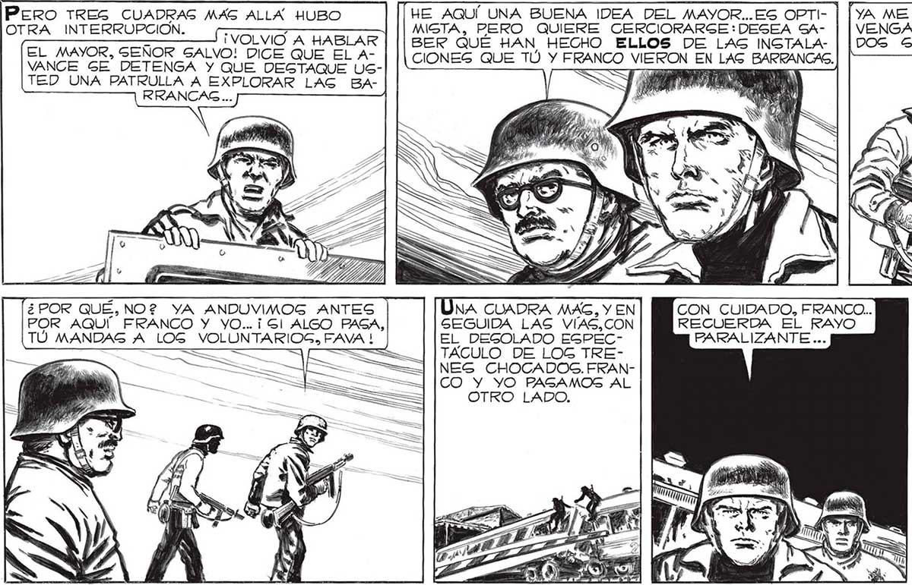
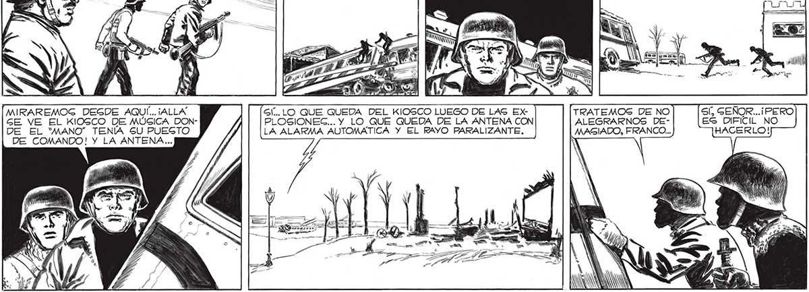

184 HE AQUÍ UNA BUENA IDEA DEL MAYOR..ES OPTI- | [ya ME DOY CUENTA...iFRANCO! ¡PERO, JUAN! MIGTA, PERO QUIERE CERCIORARGE:DESEA SA- | | VENGA USTED CONMIGO. LOS ¡TÚ NÓ PUE-| BER QUÉ HAN HECHO ELLOS DE LAS INGTALA- | [DOS SEREMOS LA PATRULLA! DES IR! CIONES QUE TÚ Y FRANCO VIERON EN LAS AS e y) PERO TRES CUADRAG MAS ALLA HUBO OTRA INTERRUPCION. ¡VOLVIO A HABLAR EL MAYOR, GEÑOR GALVO! DICE QUE EL AVANCE GE DETENGA Y QUE DEGTAQUE USTED UNA PATRULLA A EXPLORAR LAG BARRANCAS ... RES Gí, SEÑOR... Y RECUERDE USTED LA ALARMA AUTOMATICA... UNA CUADRA MAG, Y EN CON CUIDADO, FRANCO... GEGUIDA LAS VIAS,CON RECUERDA EL RAYO EL DEGOLADO EGPEC- PARALIZANTE ... TACULO DE LOG TRENES CHOCADOS. FRANCO Y YO PAGAMOS AL OTRO LADO. ¿ POR QUÉ, NO? YA ANDUVIMOG ANTES POR AQUÍ FRANCO Y YO... ¡Gl ALGO PASA, TÚ MANDAS A LOG VOLUNTARIOS, FAVA ! Po 011 OS MIRAREMOG DEGDE AQUÍ... ¡ALLA Gl... LO QUE QUEDA DEL KIOSCO LUEGO DE LAS EX TRATEMOSG DE NO Sí, SEÑOR...¡PERO SE VE EL KIOSCO DE MÚSICA DON- PLOSIONEC... Y LO QUE QUEDA DE LA ANTENA CON ALEGRARNOS DE- ES DIFICIL. NO DE EL “MANO” TENIA 5U PUEGTO LA ALARMA AUTOMATICA Y EL RAYO PBARALIZANTE. MASGIADO, FRANCO... HACERLO! DE COMANDO! Y LA ANTENA...

